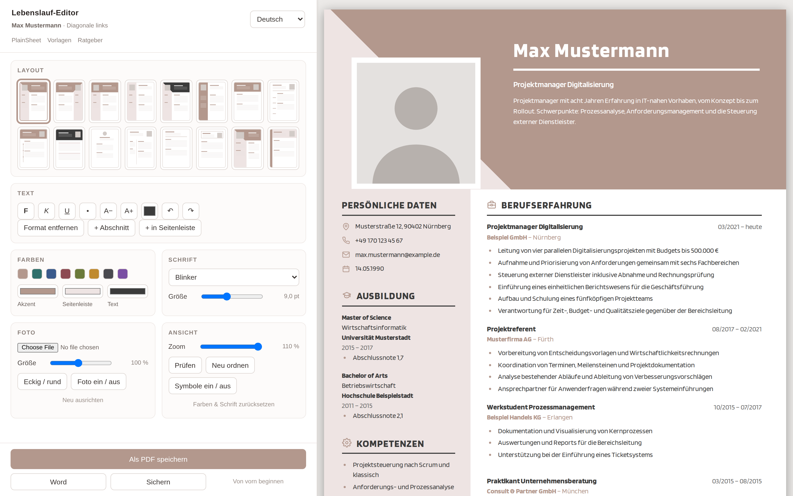

Lebenslauf im Browser schreiben. Kostenlos.
Direkt in eine echte A4-Seite tippen, eines von sechzehn Layouts wählen, PDF speichern. Ohne Anmeldung, ohne Wasserzeichen, und nichts von dem, was Sie schreiben, wird hochgeladen.
Kostenlos · keine Anmeldung · läuft in jedem Browser

Das PDF ist am Ende kostenlos, nicht nach einer Testphase. Es gibt keinen Download-Knopf, hinter den ein Preis passt.
Der Editor ist eine Seite Code, die auf Ihrem Gerät läuft. Kein Server sieht Ihren Werdegang.
Wechseln Sie das Design, wann Sie wollen. Was Sie geschrieben haben, bleibt stehen.
Vorlage wählen
Jede ist ein fertiges A4-Dokument. Die tabellarischen mit Datumsspalte entsprechen der hier üblichen Form; einspaltige werden von Bewerbungsportalen am zuverlässigsten eingelesen.
Ein fertiges Muster ansehen
Ein vollständiger Lebenslauf für mehrere Berufe, mit der Begründung daneben: was zuerst geprüft wird und welche Zeilen zählen.
Pflegefachkraft
Ein Pflege-Lebenslauf wird auf Fakten gelesen, bevor er auf Formulierungen gelesen wird: Anerkennung, Fachbereich, Versorgungsschlüssel, Weiterbildungen.
6 Minuten LesezeitBüroKauffrau für Büromanagement
Verwaltungsarbeit wird daran gemessen, was aufgehört hat schiefzugehen — die Art von Erfolg, die am schwersten aufzuschreiben ist.
6 Minuten LesezeitITSoftwareentwickler
Entwickler-Lebensläufe werden von Entwicklern gelesen.
6 Minuten LesezeitWas hineingehört
Das Layout übernimmt der Editor. Diese Texte behandeln die Worte — den Teil, an dem entschieden wird, ob jemand anruft.
Lebenslauf schreiben
Die meisten Ratgeber zum Lebenslauf sind eine Liste von Adjektiven oder eine Verkaufsseite.
11 Minuten LesezeitGrundlagenDas Anschreiben, in fünf Absätzen
Das Anschreiben ist im deutschsprachigen Raum keine Zugabe, sondern Teil der Bewerbung.
9 Minuten LesezeitDACH-BesonderheitenArbeitszeugnis lesen: der Code und was er bedeutet
Ein Arbeitszeugnis muss wohlwollend und wahr zugleich sein.
10 Minuten LesezeitFragen
Ist es wirklich kostenlos?
Ja. Der Export ist der Druck-nach-PDF Ihres Browsers — es gibt nichts, wofür wir etwas verlangen könnten, und kein Wasserzeichen zu entfernen. Bezahlt wird die Seite über Werbung auf den Seiten um den Editor herum.
Brauche ich ein Konto?
Nein. Es gibt keine Anmeldung, weil kein Server etwas speichert. Mit „Sichern“ legen Sie eine Datei auf Ihrem Rechner ab und arbeiten später daran weiter.
Kommt der Lebenslauf durch ein Bewerbungssystem?
Einspaltige Layouts wie Plainfield und Linden werden am zuverlässigsten eingelesen. Layouts mit Seitenleiste gefallen einem Menschen besser, können aber Programme verwirren, die quer über die Spalten lesen.
Wo liegen meine Daten?
In Ihrem Browser, auf Ihrem Gerät. Der Editor behält einen Arbeitsstand lokal, damit ein geschlossener Tab keine Stunde kostet, und dieser Stand verlässt das Gerät nie.
Mit Foto oder ohne?
Im deutschsprachigen Raum ist ein Foto weiterhin üblich, in den USA und Großbritannien ein Risiko. Jedes Layout funktioniert mit und ohne.
Jetzt auf die Seite bringen
Der Editor startet mit einem ausgefüllten Beispiel. Text ersetzen, Layout wählen, als PDF drucken. Nichts wird hochgeladen, nichts kostet etwas.